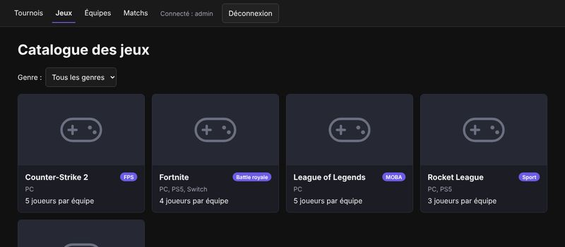
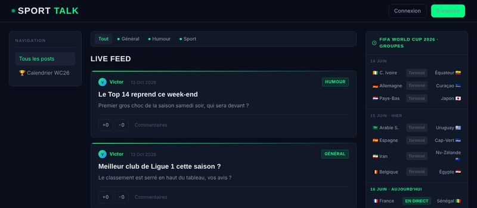
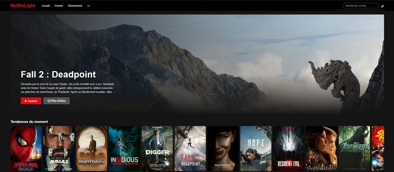
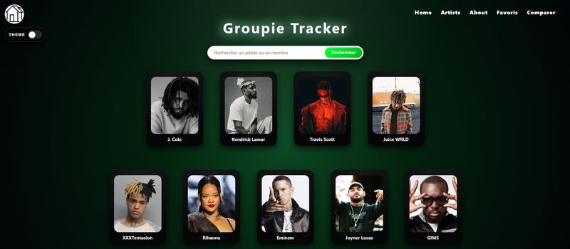
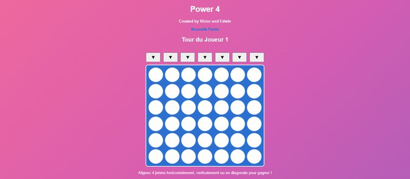
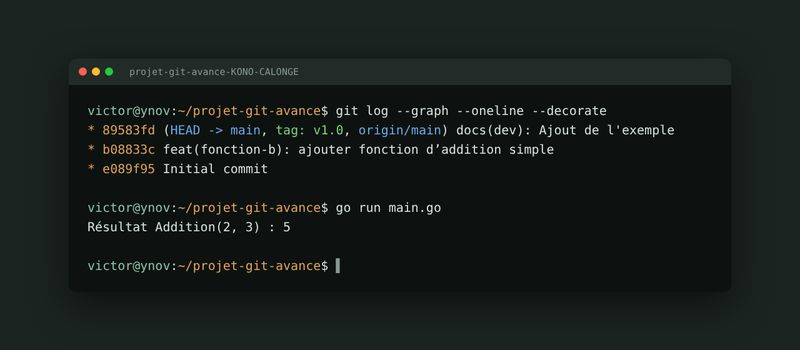

victor@ynov:~$ whoami
Victor Kono-Manetti
Étudiant en Bachelor Informatique à Ynov Toulouse, spécialisation cybersécurité.
Recherche de stage 2026-2027 · cyber / infravictor@ynov:~$ cat a_propos.txt
À propos
J'ai 18 ans et je suis en deuxième année de Bachelor Informatique à Ynov Toulouse. Je m'oriente vers la cybersécurité et l'infrastructure : réseau, systèmes Linux, sécurisation des applications.
À l'école, je développe surtout en Go, en Python et en Java, en solo et en équipe. Je cherche un stage pour 2026-2027 pour mettre ces bases en pratique sur des environnements réels.
victor@ynov:~$ ls ~/projets
Projets

Projet-Arena
githubPlateforme de tournois e-sport : jeux, équipes, génération du calendrier des matchs et classement. API REST sécurisée par JWT.

ProjJS.2-Forum
githubSportTalk, forum sportif sans framework : posts avec images, likes, rôles modérateur / admin, sessions sécurisées (bcrypt).

Projet_NetflixLight
giteaPlateforme de streaming inspirée de Netflix : catalogue de films, film à la une, comptes utilisateurs, favoris, recherche et mode sombre.

Projet_GroupieTracker
giteaPlateforme musicale inspirée de Spotify : fiches artistes, recherche, favoris, comparaison d'artistes et thème clair / sombre.

Power4
giteaPuissance 4 jouable à deux dans le navigateur, réalisé en binôme : tours de jeu, détection de victoire en ligne, colonne et diagonale.
Projet-JAVA
giteaSimulateur de lancement spatial : application console en Java où l'on assemble une fusée, choisit une mission et simule le lancement.
Projet_Red
giteaRPG en console : création du personnage, inventaire et équipement, achat et forge d'objets, puis combat au tour par tour contre un gobelin.

projet-git-avance
githubTravail en binôme sur les workflows Git avancés : branches, merges, historique propre.
victor@ynov:~$ history
Parcours
Formation
- 2025 – 2028Bachelor InformatiqueYnov Campus, Toulouse · spécialisation cybersécurité
- 2022 – 2025Bac généralMaths, Physique-Chimie, NSI · Lycée Pierre de Fermat, Toulouse
Expériences
- Depuis 2024CaissierJob d'été, chaque été · accueil client et encaissement
- Déc. 2021Stage d'observation de 3èmeSopra Steria · cybersécurité
victor@ynov:~$ skills --list
Compétences
Technique
Langues
Centres d'intérêt
victor@ynov:~$ contact